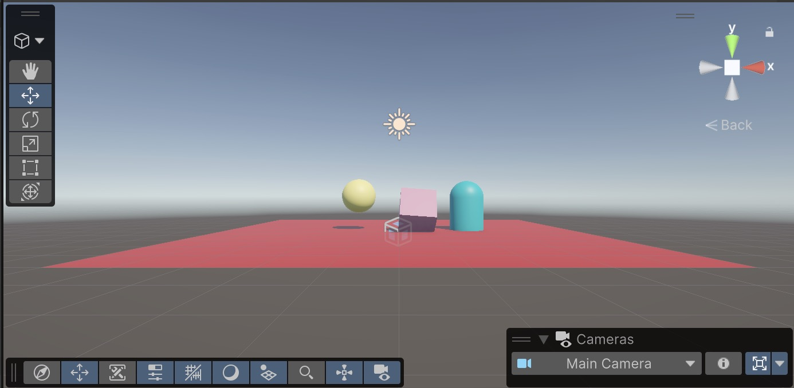

My Unity Scene

Description
For this assignment, I created my first 3D scene using Unity. The space contains several objects arranged to create a simple environment. I experimented with positioning, scaling, rotation, materials, and lighting to build the scene.
Objects and Construction
I created the objects in my scene using Unity's built-in 3D primitives. For example, I used a cube, a sphere, a plane, and a capsule to create the different parts of my environment and changed their scale and position to create the shapes I wanted.
I also created materials and changed their Base Map colors to give the objects different appearances. The materials use Unity's default Lit shader.
What I Learned
One of the most interesting things I learned was how simple 3D primitives can be used to create an immersive visual that tells a story. I also learned how the inspector can be used to precisely change an object's position, rotation, and scale to precision.
Working with Unity helped me understand how a 3D scene is constructed and how different objects and components work together to tell a story.